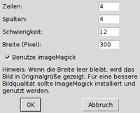
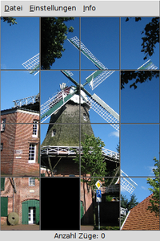
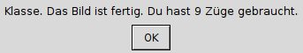

Simplix Puzzle
Dieser Artikel wurde für die folgenden Ubuntu-Versionen getestet:
Ubuntu 14.04 Trusty Tahr
Zum Verständnis dieses Artikels sind folgende Seiten hilfreich:
Simplix Puzzle  ist ein Bilder-Schiebepuzzle. Zu Grunde liegt eine einfache Spielidee, die aber je nach Motiv und Anzahl der Puzzlesteine auch für Erwachsene eine Herausforderung darstellen kann. Neben Deutsch beherrscht die Programmoberfläche die Sprachen Englisch, Spanisch, Italienisch und Türkisch. Erstellt wurde das Programm von Oliver Scholl mit Tcl/TK. Es steht unter der GNU General Public License (GPL).
ist ein Bilder-Schiebepuzzle. Zu Grunde liegt eine einfache Spielidee, die aber je nach Motiv und Anzahl der Puzzlesteine auch für Erwachsene eine Herausforderung darstellen kann. Neben Deutsch beherrscht die Programmoberfläche die Sprachen Englisch, Spanisch, Italienisch und Türkisch. Erstellt wurde das Programm von Oliver Scholl mit Tcl/TK. Es steht unter der GNU General Public License (GPL).
Andere Bilderpuzzles sind Picsaw und Tetzle.
Installation¶
 Das Programm ist nicht in den offiziellen Paketquellen enthalten. Die Installation ist aber nicht sonderlich kompliziert. Als Voraussetzung braucht man das folgende Paket [1]:
Das Programm ist nicht in den offiziellen Paketquellen enthalten. Die Installation ist aber nicht sonderlich kompliziert. Als Voraussetzung braucht man das folgende Paket [1]:
tk
 mit apturl
mit apturl
Paketliste zum Kopieren:
sudo apt-get install tk
sudo aptitude install tk
Manuell¶
Hinweis!
Fremdsoftware kann das System gefährden.
Dann lädt man sich die Archivdatei simplixpuzzle-1.0.tar 
 herunter. Für eine systemweite Installation bietet sich der Ordner /opt/simplixpuzzle/ an. Der folgende Befehl entpackt [2] das Archiv:
herunter. Für eine systemweite Installation bietet sich der Ordner /opt/simplixpuzzle/ an. Der folgende Befehl entpackt [2] das Archiv:
sudo tar -xvf simplixpuzzle-1.0.tar -C /opt
Abschließend passt man die Rechte an und erstellt einen Symlink, um das Programm bequem starten zu können:
sudo chmod a+x /opt/simplixpuzzle/simplixpuzzle.tcl sudo ln -s /opt/simplixpuzzle/simplixpuzzle.tcl /usr/local/bin/simplixpuzzle
Der Programmstart erfolgt nun über den Befehl:
simplixpuzzle
Optional kann man sich einen Programmstarter [4] erstellen. Ein Beispiel für die Datei simplixpuzzle.desktop:
[Desktop Entry] Version=1.0 Name=Simplix Puzzle Comment=Puzzle with tiled images Comment[de]=Bild-Schiebepuzzle Exec=simplixpuzzle Icon=/usr/share/icons/SYMBOL.png Categories=Game; Terminal=false Type=Application
Einstellungen¶
 Obwohl es nicht viel einzustellen gibt, wird man in der Regel die Programmsprache auf Deutsch umstellen wollen. Dies erfolgt über "Einstellungen -> Sprache". Anschließend muss das Programm neu gestartet werden.
Die zweite wichtige Einstellungen betrifft die Verwendung von ImageMagick. Diese Option unter "Einstellungen -> Puzzle" sollte aktivieren werden, damit beliebige Bilder im JPG-Format geöffnet werden können (ansonsten können nur .ppm-Bilder ausgewählt werden). An gleicher Stelle kann man auch die Anzahl der Puzzlesteine, den Schwierigkeitsgrad und die Spielfeldgröße konfigurieren. Die Vorgaben sind 4x4 Kacheln, 12 und 300 Pixel. Tipp: Mit 600 Pixeln lässt es sich einfacher puzzlen.
Die Konfiguration wird in den Dateien ~/puzzle.conf (Programmeinstellungen) und ~/puzzle.dat (Spielstand) im Homeverzeichnis gespeichert (siehe auch Problembehebung).
Bedienung¶

Nach dem Programmstart sucht man sich mit "Datei -> Neu" ein Bild aus. Das Spielprinzip ist einfach. Grundsätzlich geht es darum, das verwürfelte Bildmotiv wiederherzustellen. Die leere schwarze Kachel wird dazu mit einem Linksklick  gegen eine benachbarte Bildkachel ausgetauscht, bis es wieder passt. Als Belohnung erscheint ein kleines Meldungsfenster, dass die Anzahl der benötigten Züge enthält. Je weniger, desto besser:
gegen eine benachbarte Bildkachel ausgetauscht, bis es wieder passt. Als Belohnung erscheint ein kleines Meldungsfenster, dass die Anzahl der benötigten Züge enthält. Je weniger, desto besser:

Beendet man das Programm vorzeitig, so wird das ungelöste Puzzle beim nächsten Programmstart aus der Datei ~/puzzle.ppm automatisch wiederhergestellt. Wer endgültig aufgeben möchte, kann über "Datei -> Neu" ein anderes Bild wählen.
Problembehebung¶
Bilder auswählen¶
Folgt man dem oben genannten Beispiel und startet Simplix Puzzle via Symlink, stellt man schnell fest, dass beim Öffnen einer Datei immer wieder der Ordner /usr/local/bin/ und nicht ~/Bilder/ vorgeschlagen wird. Das kann nicht nur bei Kindern zu Verwirrung führen. Abhilfe schafft das Bearbeiten der Programmdatei /opt/simplixpuzzle/simplixpuzzle.tcl mit einem Editor [5] und Root-Rechten. Dann sucht man die Zeile:
set InitialordnerBildOeffnen [file join [file dirname [info script]]] ;
und ersetzt diese durch:
set InitialordnerBildOeffnen [file join $env(HOME) Bilder] ;
Wer möchte, kann weitere Startparameter und Optionen im gut dokumentierten Quelltext ändern.
Links¶
Simplix Puzzle auf SourceForge
Programmankündigung
- Pkg-tcltk-devel Mailinglist, 10/2012
Spiele
 Programmübersicht
Programmübersicht
- Erstellt mit Inyoka
-
 2004 – 2017 ubuntuusers.de • Einige Rechte vorbehalten
2004 – 2017 ubuntuusers.de • Einige Rechte vorbehalten
Lizenz • Kontakt • Datenschutz • Impressum • Serverstatus -
Serverhousing gespendet von